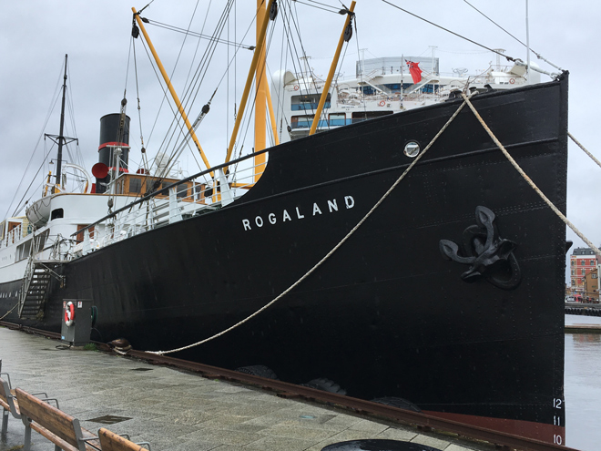
Vikings once sailed the stunning coast and fjords around Stavanger, later a major hub for mercantile and fishing fleets. Today, the city is Norway's fourth largest and has benefitted from a robust local oil industry.
The city centre is a charming pedestrian-friendly neighbourhood, Old Stavanger (Gamle Stavanger) is a well-preserved enclave with what is believed to be Europe's largest collection of 18th and 19th century wooden buildings, considered national heritage monuments..
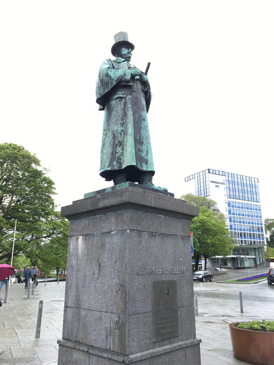
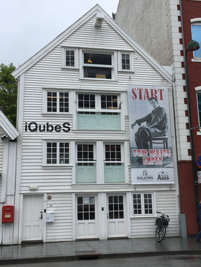
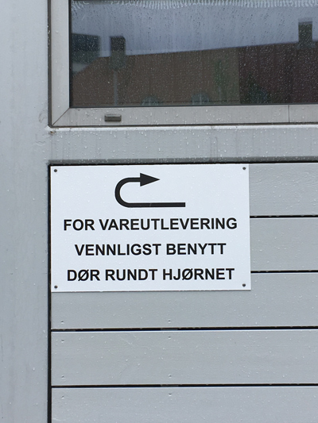
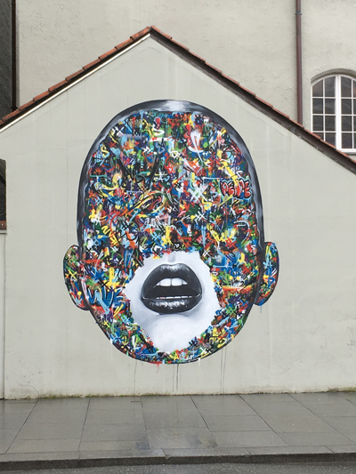
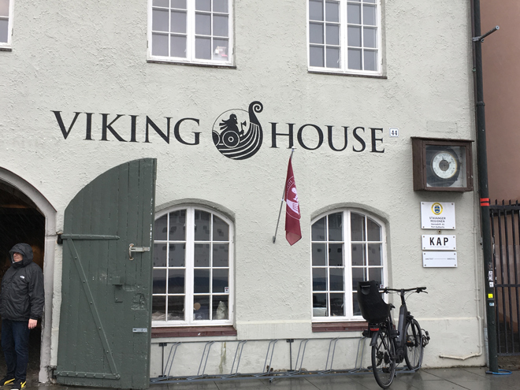
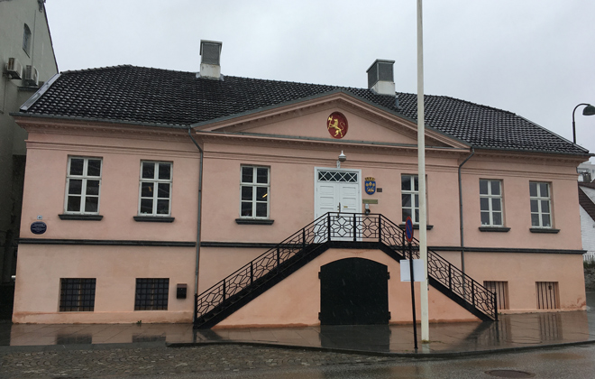
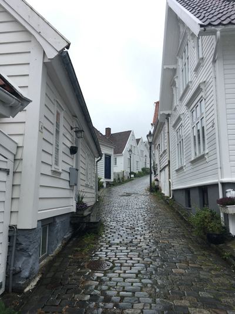
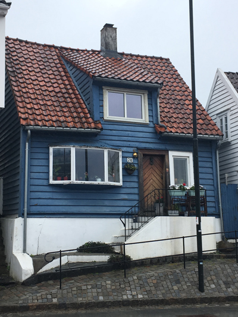
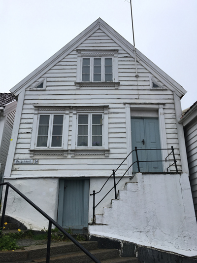
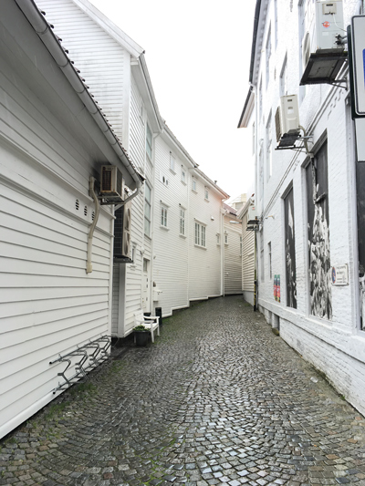
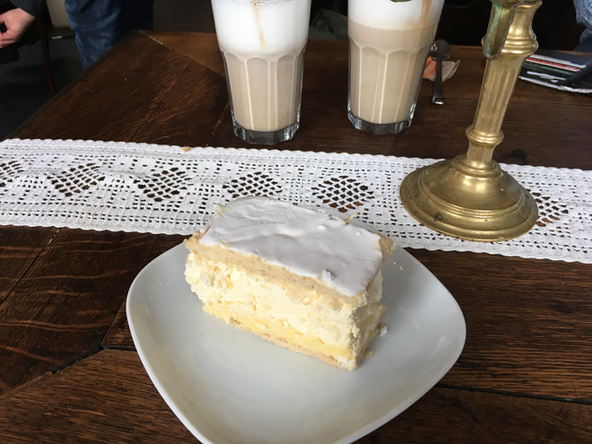
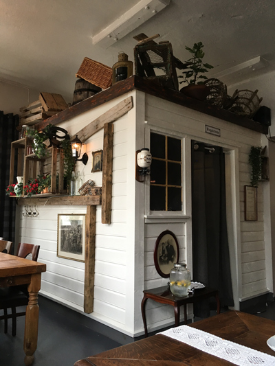
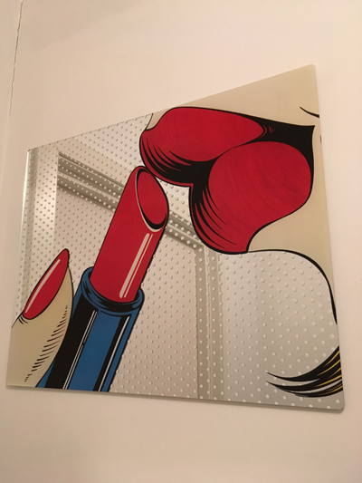
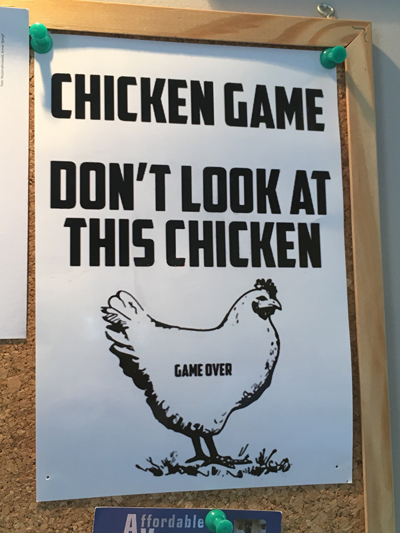
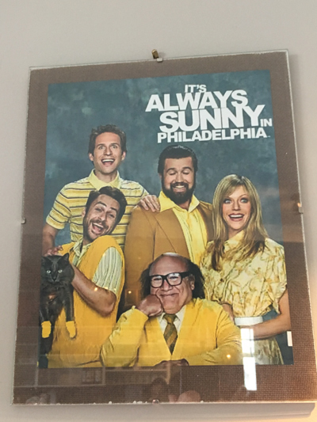
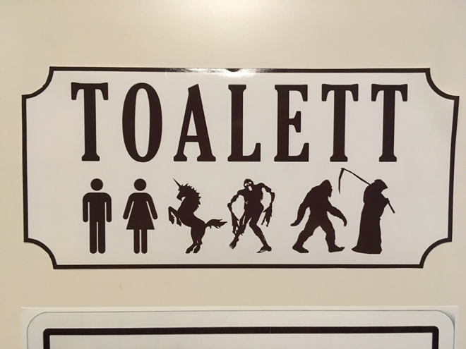
Constructed between 1100 and 1150 by Bishop Reinald, who may have come from Winchester, Stavanger Domkirke was dedicated to Saint Swithun, an early Bishop of Winchester. Scottish craftsman Andrew Lawrenceson Smith (ca. 1620-1694) created many of the heavy baroque votive panels in the Cathedral - including the pulpit which is symbolically supported by Samson..
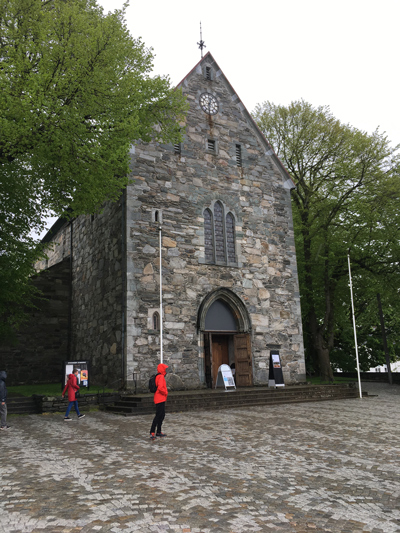
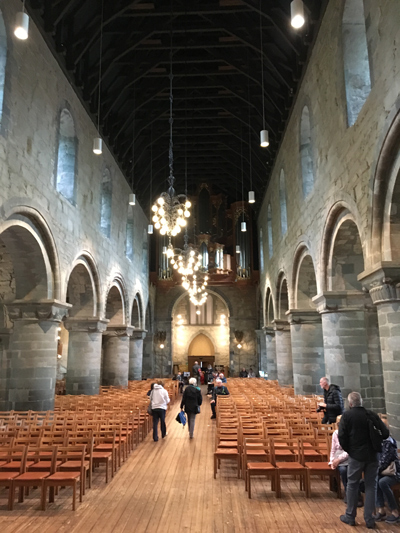
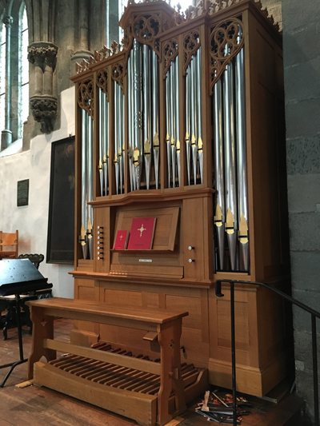
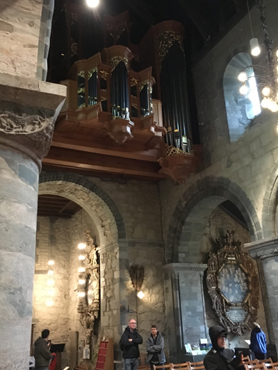
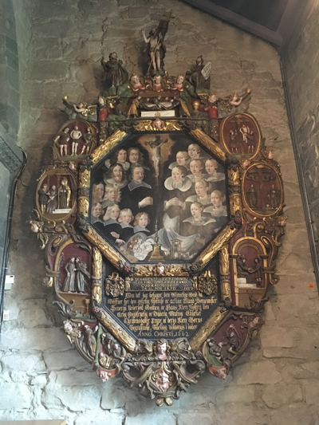
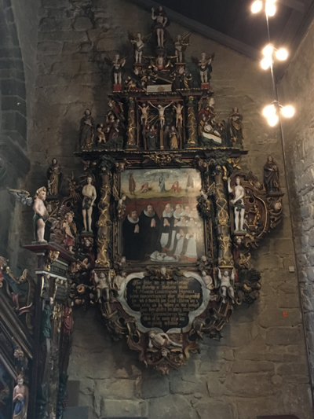
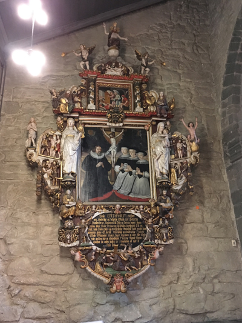
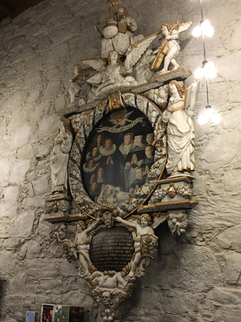
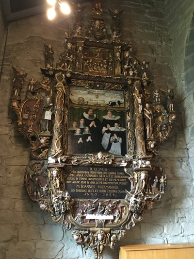
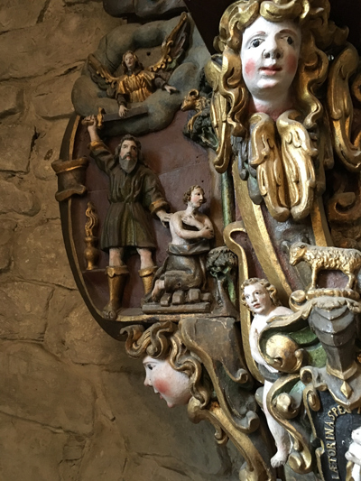
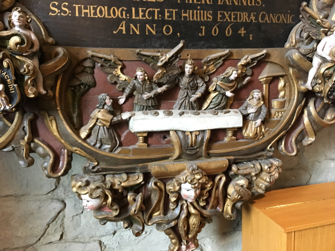
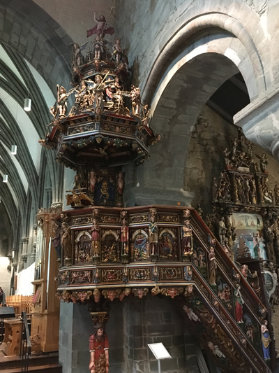
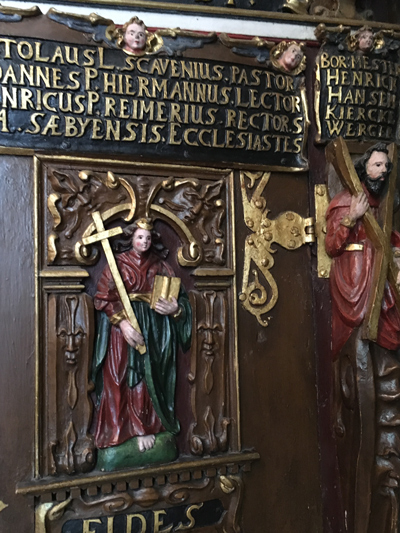
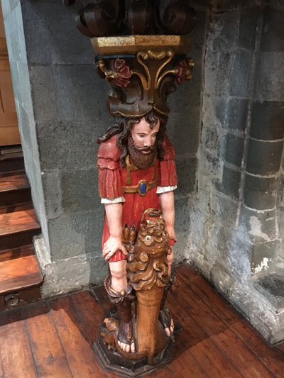
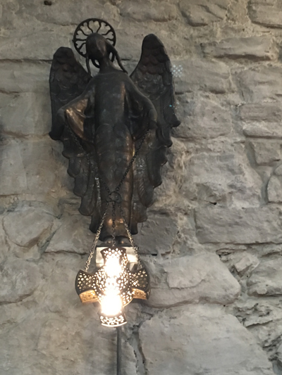
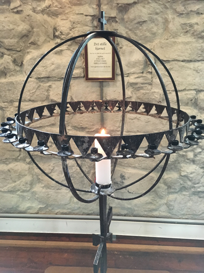
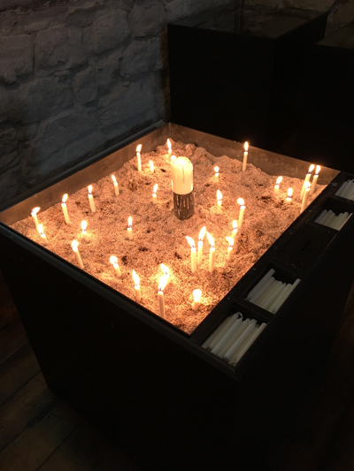